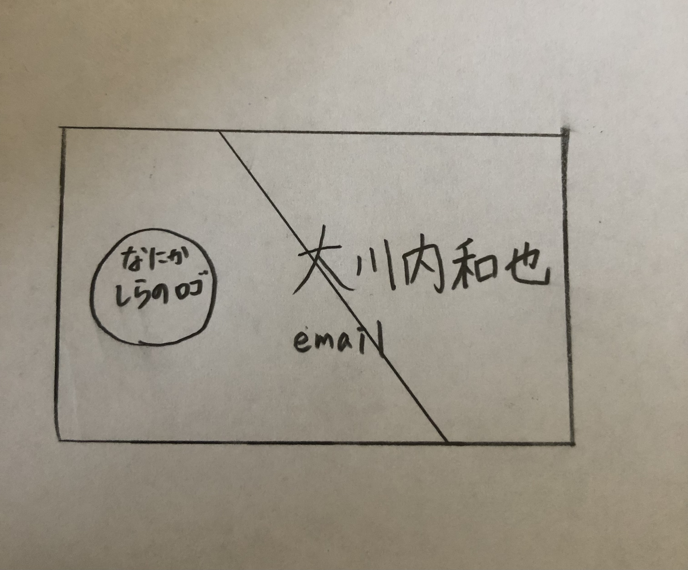
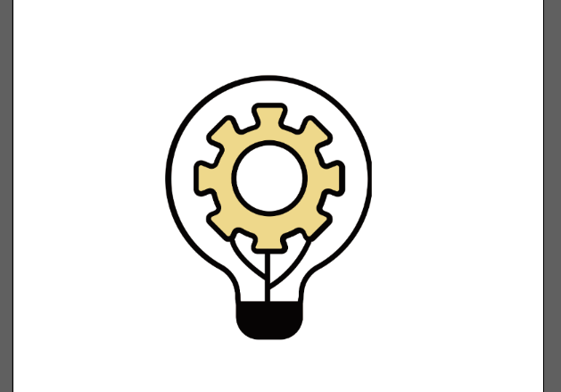
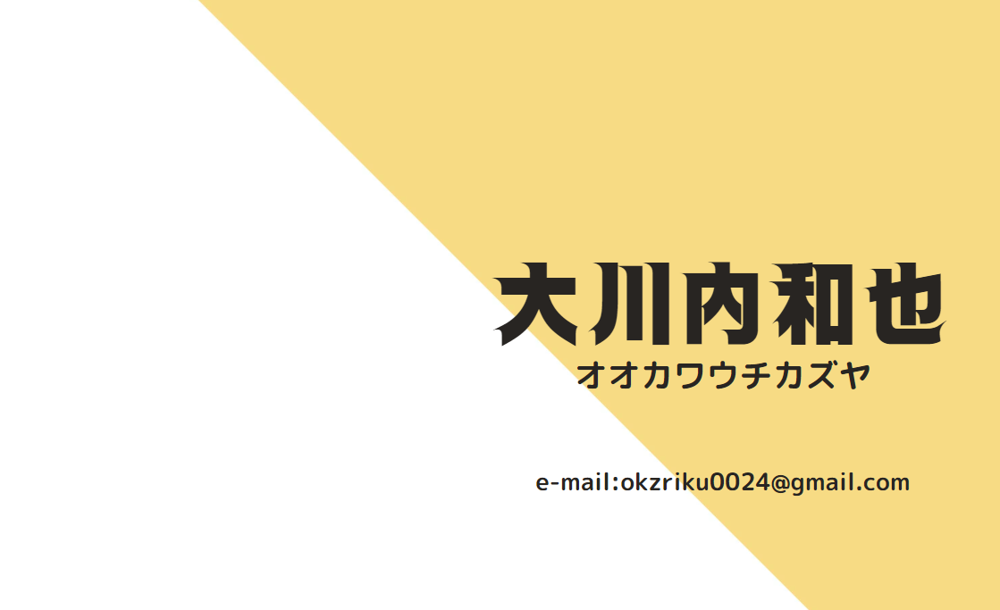
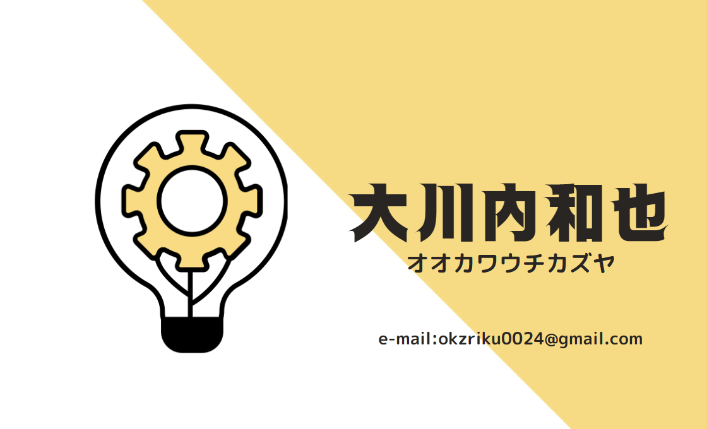

Design | 2023.2
オリジナル名刺の作成

Base deta
制作時間
3時間
使用ソフト/技術
Photoshop/illustrator
制作意図
友人が受け取ってくれるような自分らしさを表現した名刺を作成することにしました。
制作過程
01.アイデア
- 好きの柄であるストライプのデザインを前面に出す
- 今年のラッキーカラー黄色を使用
- ひらめきを表現したロゴマークを制作
- illustratorで作成
02.イメージ図を考える
ストライプを拡大したものを使用。
ロゴマークの作成
ひらめき＋技術を合わせたロゴをイメージするために物事の抽象化に挑戦しました。その結果、ひらめき＝💡 技術＝⚙であることに気づきこの二つをかけあわせたロゴを制作しました。

その他の作成
次にロゴマーク以外の部分の作成に取り掛かりました

全体をシンプルに白と黄色で染色
名前部分のフォントはスピード感を表現する「スピーディーレフト」
完成作品
最後にこの２つを合体して完成です。

モックアップの作成
展示する時のイメージがわきやすいようにphotoshopでモックアップを作成しました。
まとめ
個人的にはイメージがきれいに固まったのでよかったです。
ロゴマークの出来には満足しています
次の制作も頑張ります。
CONTACT
お問い合わせは、
メールにてお願いいたします。